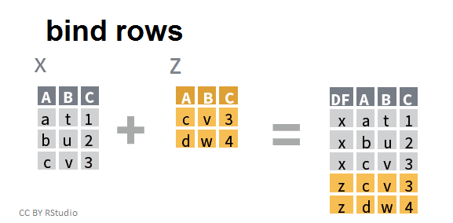

Day 4 - Joins and Binds
1 Differences between them
Binding rows or columns from two dataframes:

Joining two dataframes with a left_join():

Image Credit: https://stat545.stat.ubc.ca/tutorials/tibble_join/
2 Bind rows
Import additional WQ data collected in 2019 at P8 and D7
df_wq_2019 <- read_csv(here("data/WQ_2019.csv"))Look at structure of both dataframes to bind
# 2020-2022 data:
glimpse(df_wq)Rows: 62
Columns: 20
$ Station <chr> "P8", "D7", "P8", "D7", "P8", "D7", "P8", "D7", "P8…
$ Date <date> 2020-01-16, 2020-01-22, 2020-02-14, 2020-02-20, 20…
$ Chla <dbl> 0.64, 0.67, 1.46, 2.15, 1.40, 1.89, 4.73, 1.74, 6.4…
$ Pheophytin <dbl> 0.50, 0.87, 0.69, 0.50, 0.56, 1.13, 1.25, 0.89, 0.8…
$ TotAlkalinity <dbl> 98.0, 82.0, 81.0, 86.0, 80.0, 93.0, 59.0, 78.0, 63.…
$ DissAmmonia <dbl> 0.150, 0.210, 0.250, 0.140, 0.110, 0.220, 0.050, 0.…
$ DissNitrateNitrite <dbl> 2.800, 0.490, 1.700, 0.480, 1.600, 0.380, 1.070, 0.…
$ DOC <dbl> 3.90, 0.27, 2.80, 0.39, 2.00, 0.19, 2.80, 1.20, 3.1…
$ TOC <dbl> 4.10, 0.32, 2.50, 0.41, 2.10, 0.20, 2.80, 1.20, 3.1…
$ DON <dbl> NA, NA, NA, NA, NA, NA, 0.30, 0.20, 0.30, 0.10, 0.5…
$ TotPhos <dbl> 0.310, 0.082, 0.130, 0.130, 0.190, 0.100, 0.188, 0.…
$ DissOrthophos <dbl> 0.200, 0.071, 0.130, 0.065, 0.140, 0.082, 0.177, 0.…
$ TDS <dbl> 380, 9500, 340, 5800, 290, 8700, 280, 7760, 227, 11…
$ TSS <dbl> 8.9, 38.0, 2.2, 18.0, 1.4, 28.0, 6.6, 35.6, 5.3, 23…
$ TKN <dbl> 0.520, 0.480, 0.430, 0.250, 0.400, 0.200, 0.400, 0.…
$ Depth <dbl> 28.9, 18.8, 39.0, 7.1, 39.0, 7.2, 37.1, 5.2, 36.7, …
$ Secchi <dbl> 116, 30, 212, 52, 340, 48, 100, 40, 160, 44, 120, 6…
$ Microcystis <dbl> 1, 1, 1, 1, 1, 1, 3, 2, 3, 2, 4, 2, 3, 2, 2, 1, 1, …
$ SpCndSurface <dbl> 667, 15532, 647, 11369, 530, 16257, 503, 12946, 404…
$ WTSurface <dbl> 9.67, 9.97, 11.09, 12.51, 13.97, 13.81, 23.46, 21.1…names(df_wq) [1] "Station" "Date" "Chla"
[4] "Pheophytin" "TotAlkalinity" "DissAmmonia"
[7] "DissNitrateNitrite" "DOC" "TOC"
[10] "DON" "TotPhos" "DissOrthophos"
[13] "TDS" "TSS" "TKN"
[16] "Depth" "Secchi" "Microcystis"
[19] "SpCndSurface" "WTSurface" # 2019 data:
glimpse(df_wq_2019)Rows: 24
Columns: 20
$ Station <chr> "P8", "D7", "P8", "D7", "P8", "D7", "P8", "D7", "P8…
$ Date <date> 2019-01-15, 2019-01-17, 2019-02-15, 2019-02-20, 20…
$ Chla <dbl> 0.84, 0.88, 2.29, 1.92, 2.60, 2.53, 1.59, 2.81, 1.0…
$ Pheophytin <dbl> 1.21, 0.64, 1.03, 2.32, 1.42, 1.35, 1.25, 1.19, 0.5…
$ TotAlkalinity <dbl> NA, NA, NA, NA, NA, NA, NA, NA, NA, NA, NA, NA, NA,…
$ DissAmmonia <dbl> 0.200, 0.214, 0.090, 0.070, 0.050, 0.050, 0.050, 0.…
$ DissNitrateNitrite <dbl> 3.600, 0.570, 1.030, 0.370, 0.540, 0.300, 0.420, 0.…
$ DOC <dbl> 6.00, 1.70, 6.10, 4.20, 3.60, 2.50, 2.60, 2.30, 2.2…
$ TOC <dbl> 6.00, 1.70, 5.60, 4.20, 3.60, 2.50, 2.60, 2.10, 2.2…
$ DON <dbl> 0.50, 0.10, 0.50, 0.30, 0.38, 0.20, 0.20, 0.16, 0.2…
$ TotPhos <dbl> 0.370, 0.094, 0.153, 0.180, 0.070, 0.080, 0.100, 0.…
$ DissOrthophos <dbl> 0.329, 0.092, 0.120, 0.071, 0.075, 0.065, 0.072, 0.…
$ TDS <dbl> 491, 8530, 160, 133, 112, 108, 109, 94, 118, 150, 5…
$ TSS <dbl> 12.0, 24.0, 17.0, 108.0, 6.0, 36.0, 27.0, 22.0, 4.0…
$ TKN <dbl> 0.800, 0.380, 0.700, 0.600, 0.400, 0.400, 0.300, 0.…
$ Depth <dbl> 38.7, 8.2, 17.0, 8.0, 36.7, 8.2, 39.0, 7.0, 37.8, 6…
$ Secchi <dbl> 100, 52, 44, 16, 76, 28, 92, 28, 100, 40, 80, 44, 1…
$ Microcystis <dbl> 1, 1, 1, 1, 1, 1, 1, 1, 1, 1, 1, 1, 1, 1, 2, 1, 4, …
$ SpCndSurface <dbl> 878, 14498, 276, 228, 194, 189, 195, 168, 214, 276,…
$ WTSurface <dbl> 10.03, 10.37, 10.87, 9.19, 12.12, 12.70, 14.26, 14.…names(df_wq_2019) [1] "Station" "Date" "Chla"
[4] "Pheophytin" "TotAlkalinity" "DissAmmonia"
[7] "DissNitrateNitrite" "DOC" "TOC"
[10] "DON" "TotPhos" "DissOrthophos"
[13] "TDS" "TSS" "TKN"
[16] "Depth" "Secchi" "Microcystis"
[19] "SpCndSurface" "WTSurface" Add 2019 data to 2020-2022 data by binding rows:
df_wq_2019_2022 <- bind_rows(df_wq_2019, df_wq)
df_wq_2019_2022# A tibble: 86 × 20
Station Date Chla Pheophytin TotAlkalinity DissAmmonia
<chr> <date> <dbl> <dbl> <dbl> <dbl>
1 P8 2019-01-15 0.84 1.21 NA 0.2
2 D7 2019-01-17 0.88 0.64 NA 0.214
3 P8 2019-02-15 2.29 1.03 NA 0.09
4 D7 2019-02-20 1.92 2.32 NA 0.07
5 P8 2019-03-14 2.6 1.42 NA 0.05
6 D7 2019-03-18 2.53 1.35 NA 0.05
7 P8 2019-04-12 1.59 1.25 NA 0.05
8 D7 2019-04-16 2.81 1.19 NA 0.05
9 P8 2019-05-13 1.03 0.5 NA 0.05
10 D7 2019-05-15 2.1 0.69 NA 0.05
# ℹ 76 more rows
# ℹ 14 more variables: DissNitrateNitrite <dbl>, DOC <dbl>, TOC <dbl>,
# DON <dbl>, TotPhos <dbl>, DissOrthophos <dbl>, TDS <dbl>, TSS <dbl>,
# TKN <dbl>, Depth <dbl>, Secchi <dbl>, Microcystis <dbl>,
# SpCndSurface <dbl>, WTSurface <dbl>2.1 Exercise
Add data collected from 2019-2022 at C3A to dataframe with P8 and D7
3 Join basics


4 Left join
Join Delta inflow and outflow data from DayFlow to WQ data
# Import Delta inflow and outflow data
df_dayflow <- read_csv(here("data/Dayflow_2019_2023.csv"))
# Join Delta flow data to 2019-2022 WQ data
df_wq_flow <- left_join(df_wq_2019_2022, df_dayflow)
glimpse(df_wq_flow)Rows: 86
Columns: 22
$ Station <chr> "P8", "D7", "P8", "D7", "P8", "D7", "P8", "D7", "P8…
$ Date <date> 2019-01-15, 2019-01-17, 2019-02-15, 2019-02-20, 20…
$ Chla <dbl> 0.84, 0.88, 2.29, 1.92, 2.60, 2.53, 1.59, 2.81, 1.0…
$ Pheophytin <dbl> 1.21, 0.64, 1.03, 2.32, 1.42, 1.35, 1.25, 1.19, 0.5…
$ TotAlkalinity <dbl> NA, NA, NA, NA, NA, NA, NA, NA, NA, NA, NA, NA, NA,…
$ DissAmmonia <dbl> 0.200, 0.214, 0.090, 0.070, 0.050, 0.050, 0.050, 0.…
$ DissNitrateNitrite <dbl> 3.600, 0.570, 1.030, 0.370, 0.540, 0.300, 0.420, 0.…
$ DOC <dbl> 6.00, 1.70, 6.10, 4.20, 3.60, 2.50, 2.60, 2.30, 2.2…
$ TOC <dbl> 6.00, 1.70, 5.60, 4.20, 3.60, 2.50, 2.60, 2.10, 2.2…
$ DON <dbl> 0.50, 0.10, 0.50, 0.30, 0.38, 0.20, 0.20, 0.16, 0.2…
$ TotPhos <dbl> 0.370, 0.094, 0.153, 0.180, 0.070, 0.080, 0.100, 0.…
$ DissOrthophos <dbl> 0.329, 0.092, 0.120, 0.071, 0.075, 0.065, 0.072, 0.…
$ TDS <dbl> 491, 8530, 160, 133, 112, 108, 109, 94, 118, 150, 5…
$ TSS <dbl> 12.0, 24.0, 17.0, 108.0, 6.0, 36.0, 27.0, 22.0, 4.0…
$ TKN <dbl> 0.800, 0.380, 0.700, 0.600, 0.400, 0.400, 0.300, 0.…
$ Depth <dbl> 38.7, 8.2, 17.0, 8.0, 36.7, 8.2, 39.0, 7.0, 37.8, 6…
$ Secchi <dbl> 100, 52, 44, 16, 76, 28, 92, 28, 100, 40, 80, 44, 1…
$ Microcystis <dbl> 1, 1, 1, 1, 1, 1, 1, 1, 1, 1, 1, 1, 1, 1, 2, 1, 4, …
$ SpCndSurface <dbl> 878, 14498, 276, 228, 194, 189, 195, 168, 214, 276,…
$ WTSurface <dbl> 10.03, 10.37, 10.87, 9.19, 12.12, 12.70, 14.26, 14.…
$ Inflow <dbl> 27349, 42029, 129533, 107109, 129444, 105932, 10488…
$ Outflow <dbl> 21963, 42727, 130451, 95024, 121805, 97089, 100003,…4.1 Exercise
Add weather observation data to WQ data (2019-2022, P8, D7, and C3A)